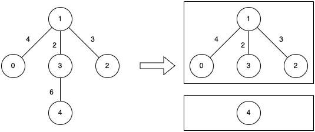
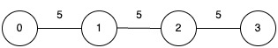

| Category | Difficulty | Likes | Dislikes |
|---|---|---|---|
| Algorithms | Medium | 110 | 9 |
binary-search | union-find | graph | sorting
apple | salesforce
You are given an undirected connected graph with n nodes labeled from 0 to n - 1 and a 2D integer array edges where edges[i] = [ui, vi, wi] denotes an undirected edge between node ui and node vi with weight wi, and an integer k.
You are allowed to remove any number of edges from the graph such that the resulting graph has at most k connected components.
The cost of a component is defined as the maximum edge weight in that component. If a component has no edges, its cost is 0.
Return the minimum possible value of the maximum cost among all components after such removals.
Example 1:
Input: n = 5, edges = [[0,1,4],[1,2,3],[1,3,2],[3,4,6]], k = 2
Output: 4
Explanation:

Example 2:
Input: n = 4, edges = [[0,1,5],[1,2,5],[2,3,5]], k = 1
Output: 5
Explanation:

k = 1) requires the graph to stay fully connected.
Constraints:
1 <= n <= 5 * 1040 <= edges.length <= 105edges[i].length == 30 <= ui, vi < n1 <= wi <= 1061 <= k <= n